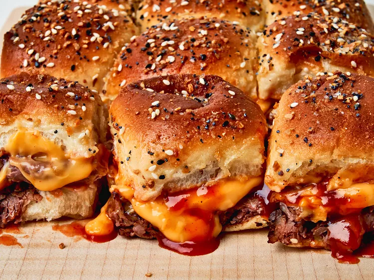

Roast Beef and Cheddar Sliders

Description
Roast Beef and Cheddar Sliders are a delicious and easy-to-make appetizer or snack, perfect for parties or casual gatherings.
These sliders feature tender slices of roast beef topped with melted cheddar cheese, nestled between soft, mini rolls.
Serve them hot for a mouthwatering treat that combines savory beef, creamy cheddar, and a delightful buttery crunch.
Ingredients:
- 4 tablespoons butter, melted, divided
- 12 ounces deli roast beef
- 3 cup Cheddar cheese sauce
- 2 teaspoons everything bagel seasoning
Steps:
- Preheat the oven to 350 degrees F (175 degrees C). Brush the bottom and sides of a 9x13-inch baking dish with melted butter until lightly coated.
- Place bottom half of rolls in baking dish and top evenly with roast beef slices. Drizzle BBQ sauce evenly over roast beef and dollop cheese sauce evenly over the top. Place top roll halves on top.
- Stir together remaining butter, garlic powder, and onion powder and brush evenly over bun tops. Sprinkle with bagel seasoning.
- Bake in the preheated oven until the center is warm and melted, and bread is toasted and golden brown, 12 to 14 minutes.